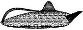

o you make teapots? Lots of them, or only one once in a while? Doesn't matter -- the following teapot hints might help a little in the production of your pots.
Hint 1
If you have ever had trouble with spouts and handles not having the same moisture content you can try this: when pots are firm enough place the spout and handle inside the pot and wrap in plastic, either until the moisture content has equalized (overnight should usually do the trick, depending on the ambient temperature), or until you are ready to assemble the pot. If you are storing pots for a longer period, make sure you use a thick plastic, or double wrap. Spraying the inside plastic layer with a spray bottle really helps to preserve moisture in the summer months, without any danger of the ware soaking it up and slumping.
Hint 2
Try using a slip trailer for slipping joints when assembling parts - spouts, knobs, handles etc. If you find slip trailers from commercial ceramics suppliers too expensive, an empty plastic ketsup bottle works well.
Hint 3
If you make holes for a strainer, try using a drill. This is much faster than doing it by hand. A cordless drill is handy, as you don't have to worry about electrical cables or plugging it in.
Hint 4
When glazing, try waxing the rim and inside lip of the lid with hot wax with some 100 mesh calcined alumina in it. This will stop the lid and pot sticking together (provided of course you fire them together!) and make for an easy release of the lid after firing.
Hint 5
If you have fired pot and lid together, and find that they have stuck together after all, and you can't get them apart with normal means (tapping) you can try the following trick. Fill the pot through the spout half with water and place in a freezer until the water has frozen. Remove the pot from the freezer and wait until part of the ice has thawed and the block has released itself from the pot. (You could place the pot in warm water to speed this up.) The released block of ice can now be used to knock the lid off from the inside.
Hint 6
If you have trouble with glaze blocking up your strainer holes you can cut up a piece of sponge and stick it into the spout, butting up against the strainer. This will prevent glaze flowing through the holes. An alternative is to pour out the glaze through the spout, which also prevents the strainer holes from blocking.